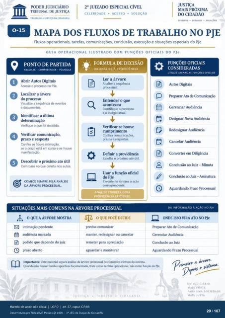

Transcrição automática em português, ainda não revisada. Confira grafia, prazos e termos jurídicos na imagem e no PDF antes de utilizar.
PONTO DE PARTIDA
ANALISAR • COMPREENDER • PLANEJAR
O Abrir Autos Digitais
o no PJe. Visualize a sequência
e ú*umenttx. Identificar a última
Verifique o que foi decidido. O Verificar comunicação,
pru) e respsta Confira se houve intimação,
se o prazo está em curso e houve manifestaçào.
Descobrir o próximo ato útil Corn no que consta nos autos.
COMECE SEMPRE PELA ANÁLISE
DA ÁRVORE PROCESSUAL.
TRABALHO A SERVIÇO DA CIDADANIA
do PJe
CELERIDADE • ACESSO • SOLUÇÃO
DIREITOS • DIÁLOGO •
MAPA DOS FLUXOS DE TRABALHO NO PJE
Fluxos operacionais. tarefas, comunicações. conclusão, execução e situações especiais do PJe.
GUIA OPERACIONAL ILUSTRADO COM FUNÇÕES OFICIAIS DO PJe
- FÓRMULA DE DECISÃO
DA ANÁLISE À PROVIDÊNCIA
Ler a árvore Analise a sequência
Entender o que aconteceu
Identifique o contexto e o estágio atual.
Verificar se houve cumprimento
Confira e reSçxÑa.S.
I)efinir a providência Escolha o próximo ato útil.
Usar a função oficial Execute no sistema a ação
corre3x»ndente.
ANALISE CORRETA GERA
PROVIDÊNCIA EFICIENTE.
SITUAÇÕES MAIS COMUNS NA ÁRVORE PROCESSUAL
OQUEAÁRVORE MOSTRA
intimação pendente audiência marcada
pedido que depende do juiz prazo aberto
OQUE VOCÊ DECIDE
precisa comunicar manter, redesignar ou cancelar
remeter para apreciação aguardar e monitorar
FUNÇÕES OFICIAIS
CONSIDERADAS
UTILIZE APENAS AS FUNÇôES OFICIAIS
Autcs Digitais Preparar Ato de Comunicação
Gerenciar Audiência Nova Audiência
Audiência Cancelar Audiência
Converter em Diligência Conclusão ao Juiz — Minuta
Conclusão ao Juiz - Assinatura Aguardando Prazo Pr«xessual
DA INFORMAÇÃO À AÇÃO NO Ple
ONDE Isso VIRA ATO NO PJe Preparar Ato de Comunicação
Gerenciar Audiência Conclusão ao Juiz
Aguardando Inux»rtante: Este material separa análise da árvore prcxessual de comandos efetivos do sistema.
Quando náo houver tx•tao esvx•cífico dtxumentado. trate como decisào ov*racional. nao como função PJe.
CIDADANIA
UM JUDICIÁRIO
MAIS FORTE
PARA UMA SOCIEDADE
MAIS JUSTA
Ver também o infográfico original (página 20)
